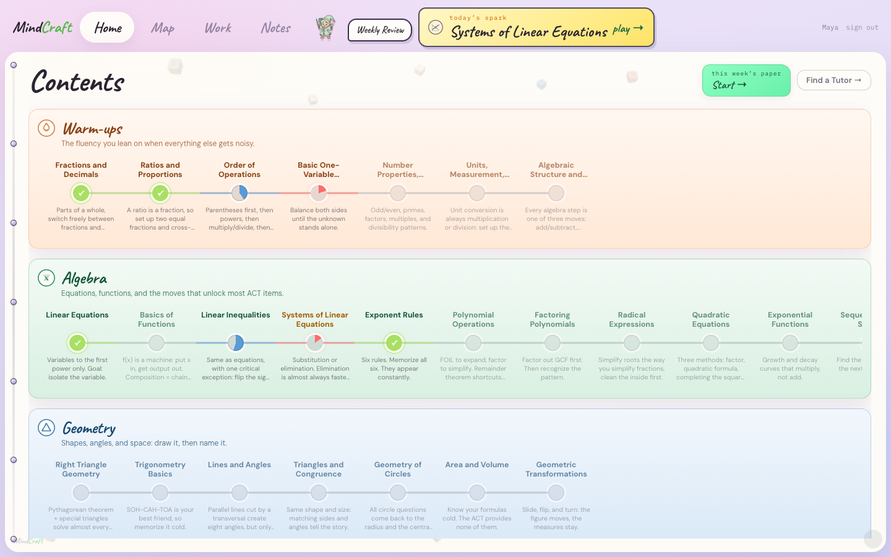

Founder · Math learning
Akshat Koirala
Math and economics at Macalester. Eight years helping students find the first step that finally makes sense. Starts on the gap, not page one.
BETA Demo Night · Twin Ignition
Bios from mindcraft-marketing-site.web.app team copy.


Creative ways we work blindspots: conversation with a Stanford PhD (human learning & technology).
Product panels: live MindCraft dashboard + gap scan. Competitive stance grounded in Research Lab ch. 27 & 35 (markets / session audits).